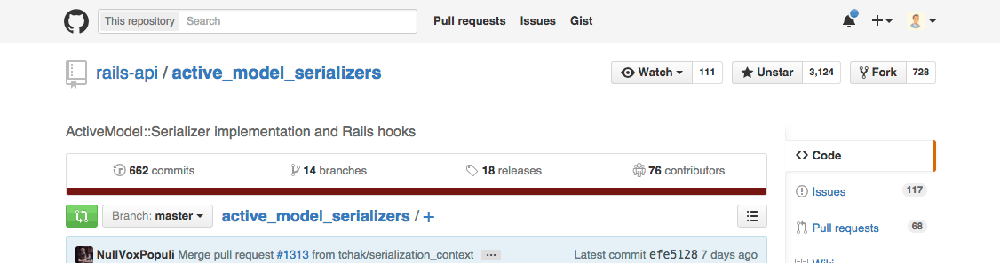
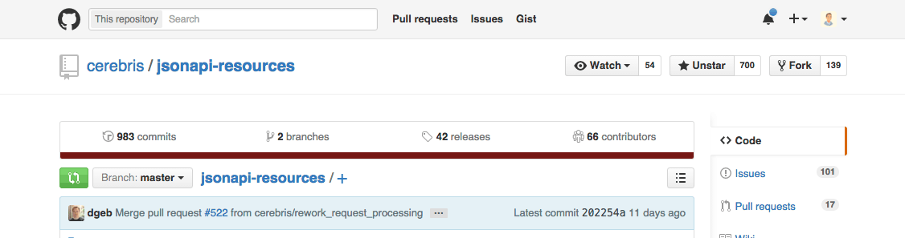

Benjamin Borowski / Ember.YVR / @typeoneerror
{
"article": {
"id": 1,
"title": "JSON API with Ember Data 2.1",
"author_id": 1
},
"authors": [
{
"id": 1,
"name": "Ben Borowski"
}
]
}
{
"data": {
"type": "articles",
"id": 1,
"attributes": {
"title": "JSON API with Ember Data 2.1"
},
"relationships": {
"author": {
"data": { "id": 1, "type": "authors" }
}
}
},
"included": [
{
"id": 1,
"type": "authors",
"attributes": { "name": "Ben Borowski" }
}
]
}

ActiveModel::Serializer.config.adapter = :json_api

$ rails generate model Author name:string
$ rails generate model Article title:string body:text author:references
gem 'jsonapi-resources', '~> 0.6.1'
$ rails generate jsonapi:resource author
$ rails generate jsonapi:resource article
# app/resources/author_resource.rb
class AuthorResource < JSONAPI::Resource
attribute :name
end
# app/resources/article_resource.rb
class ArticleResource < JSONAPI::Resource
attributes :title, :body
has_one :author
end
Serialize to compliant JSON API with ResourceSerializer.
# model
article = Article.first
# resource for model
resource = ArticleResource.new(article, nil)
# serializer for resource
serializer = JSONAPI::ResourceSerializer.new(ArticleResource)
# jsonapi-compliant hash (ready to be send to render)
serializer.serialize_to_hash(resource)
Rails.application.routes.draw do
jsonapi_resources :articles # <---- NOTE: not "resources" helper
jsonapi_resources :authors
end
# app/controllers/articles_controller.rb
class ArticlesController < JSONAPI::ResourceController
end
# app/controllers/authors_controller.rb
class AuthorsController < JSONAPI::ResourceController
end
class ApplicationController < JSONAPI::ResourceController
def context
{ current_user: current_user }
end
end
class UsersController < ApplicationController
attributes :name, :email
def fetchable_fields
if context[:current_user].guest
super - [:email]
else
super
end
end
end
Use a JSONAPI::Paginator "adapter"
# config/initializers/jsonapi_resources.rb
JSONAPI.configure do |config|
# built in paginators are :none, :offset, :paged
config.default_paginator = :paged
config.default_page_size = 2
config.maximum_page_size = 20
end
Implement the apply method.
class SingleRecordPaginator < JSONAPI::Paginator
def initialize(params)
# param parsing and validation here
@page = params.to_i
end
def apply(relation, order_options)
relation.offset(@page).limit(1)
end
end
Reach out to @typeoneerror on Twitter with questions